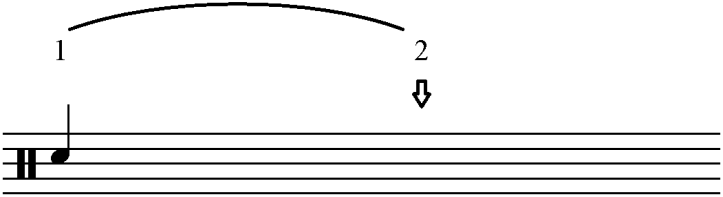
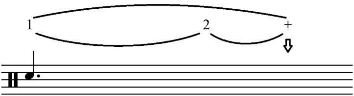
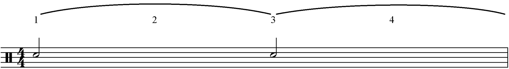
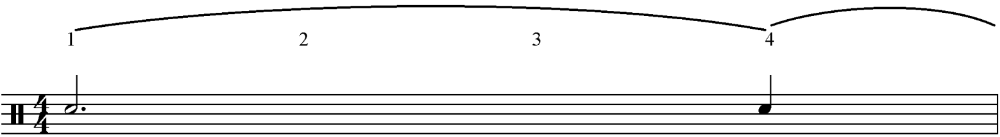

What are dotted notes?
In music theory, we can increase the value of any note or rest by adding a dot next to it. Dots are always placed to the right of the note. The dot makes the note (or rest) longer by 50%. In other words, a dotted note is equal to itself plus half of itself.
Example:
Here is a normal crotchet:Without a dot, the value of a crotchet fills up a whole beat. The crotchet lasts until the second beat.
Here we have a dotted crotchet: With the dot, the note will last a full crotchet beat plus half a crotchet beat. We also know that half of a crotchet beat is equal to one quaver. So a dotted crotchet on 1 will last until the “and” of 2.
Next we can clearly see that a minim lasts for two beats:
And that a dotted minim lasts for three beats:
